About this Lesson:
In this lesson you will learn what a Peg is and how it is used to animate art. For this lesson, you will learn how to create a dynamic set of eyes using Node view and rigging. You learn how to use layers, art layers and masks to separate the white of the eyes from the pupils. You will also be using Drawing Substitutions again.
Lesson Duration: 5 hours
Topics:
- Rigging: In Harmony, a character rig is basically a template based on your character's model, but in which all movable parts are broken down into different layers, and arranged in a hierarchy that facilitates digital animation, also known as cut-out animation.
Harmony Topics:
-
Node View/Backdrop: Backdrops are a way to work with complex node systems that let you associate a selected set of nodes by colour. You can add as many backdrops to your node structure as needed. The idea is to visually organize the structure so you can quickly identify the particular set of nodes.
You can customize the backdrops with different colours. For example, the upper part of a character's body could be in different shades of red, while the lower body is in shades of green. When you create a backdrop to the Node view, the default colour is red. -
Drawing View: In Harmony, you can draw in both the Drawing or Camera views. Although the two views are similar, there are some differences when it comes to drawing. Only the selected drawing is displayed by default in the Drawing view. You can use features, such as the light table to display the current drawing of all the enabled layers of your scene in washed-out colours, or the Onion Skin to display the previous and next drawings of the currently selected drawing layer.
-
Mattes: You can connect a matte drawing to the left edge of an Element node. When an Element node is connected to a matte drawing, only the parts of the drawings that intersect with the opaque areas of the matte drawing will be rendered. This allows you to accomplish the same effect as connecting the Element node to a cutter node, without using an extra node.
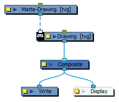
- Node Library: To add effects or other types of nodes to the Node view, you must first find them in the Node Library view.
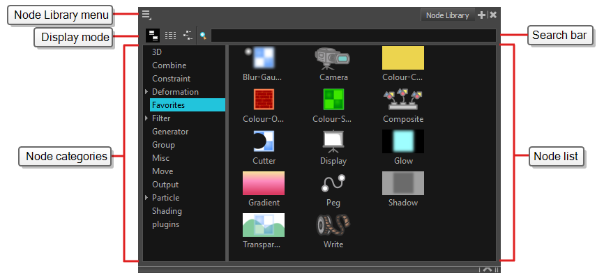
- Colour Art Node: The Colour-Art effect lets you isolate the colour art in a layer. Placing a Colour Art node after a drawing node in the Node view only displays the Colour Art output. You can connect the Colour-Art node after nodes of any type. Any bitmap information will pass through the node and be processed.
- Line Art Node: The Line Art effect lets you read only the Line Art in an element. Place a Line Art node after a drawing node in the Node view to display only the node's Line Art output. The Line Art node can be connected after nodes of any type. Any bitmap information will pass through and be processed.
- Node/Composite: The Composite node allows you to use several images and output a single image. You can compare that to doing pre-compositions in editing software. You can connect several drawing, image generators and effect nodes in your Composite node and one bitmap (or vector in some cases) comes out of it.
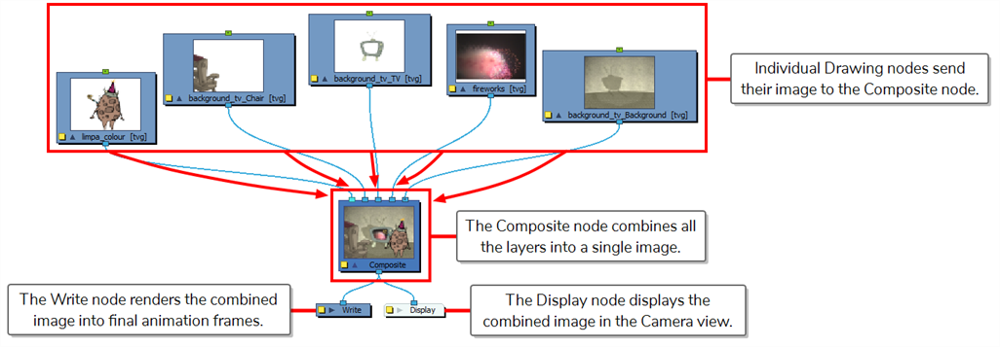
- Node/Write: When you render a scene in Harmony, what is actually rendered is what is connected to your scene's Write node. Rendering a scene's Write nodes is the main way to export a scene into image and movie files for post production.
- Node Display: The Display node is an important node; it is used by the export and views to display your scene, primarily the Camera and Timeline views. By default, a scene's node system always has a Display node which can be used to show your entire scene, a single node or a group of nodes through a Composite or Group node. You might use it to see one single character as you animate it, debug your node system as you create complex effects or export your complete scene or a portion of it.
- Node/Waypoints: Waypoints are a way to organize the connection cables in the
Shortcuts introduced in this Lesson:
-
CMD+Shift+P (macOS) or
 CTRL+Shift+P = Add separate Pegs to numerous node layers at the same time.
CTRL+Shift+P = Add separate Pegs to numerous node layers at the same time.
Task:
-
Download the support files (Dynamic Eyes) from the Lesson Files.
-
Watch and take notes on the Creating Dynamic Eyes video (above) and the topics presented in this lesson.
-
Create your own animated version of CNote moving his eyes in Harmony by following the steps presented in the video. Be sure to save and export your Harmony file as: YourName_Dynamic_Eyes in your Documents folder. Be sure to continue to take notes in your sketchbook/notebook on how to use Harmony and any animation terminology as it will help you prepare for your certification exam at the end of this course.
- Unzip the support files into your Documents folder on your computer.
- Launch Toon Boom Harmony, and open 08_eye_rig.xstage
- Play, complete and take notes on the Creating Dynamic Eyes video tutorial.
- Investigate the layout of the layers on the Timeline, you should have a face layer and an eyes layer.
- Open the Node View. Investigate the construction in your Node View, you should have a face layer node and an eyes layer node which are connected to the composite..
- Arrange your Views so you are comfortable working with Node View, Timeline and Camera View.
- Please note that there are three Drawing Substitutions on the eyes layer: open eyes (with pupils), half closed eyes and closed eyes.
- You will now separate the eyes from the frame one (drawing substitution 1) in the eyes layer. Add a New Drawing layer and name it 'eyeballs.' Select the eyes art on frame 1 of the eye layer. Cut the eyes art and paste the eyes art in your new pupils layer.
- Go to frame 60 and Extend Exposure of the eye layer.
- As a quick lesson about Waypoint connectors in Node View, disconnect the Waypoint from the eyeballs layer and the composite. Notice that the layer disappears from the Timeline view. Reconnect the Waypoint connector to the Composite Node.
- Create a separate Composite Node for just the eyeballs. Copy the existing Composite Node in the Node View and Paste it in the Node View. Select the yellow square on the left of the Composite Node to open the Layer Properties. Rename the new Composite Node to Eye_Composite. Change the Mode by Default to Pass Through, this tells Harmony that it is a secondary Composite.
- Connect a waypoint from the eyeballs layer node to the Eyes_Composite Node.
- Connect a waypoint from the eye layer node to the Eyes_Composite Node.
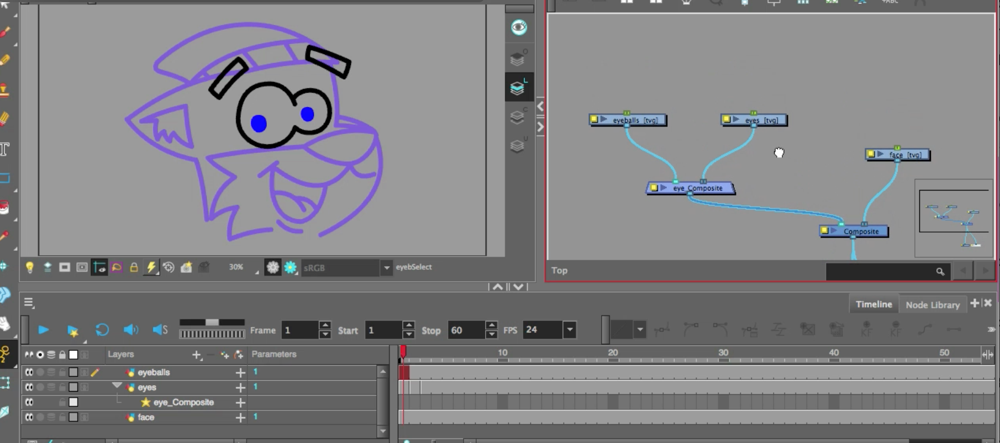
- You may need to clean up the layout of your Nodes to make it easier to work with.
- Select both the eyes and eyeballs layer nodes, press CMD+Shift+P (macOS) or CTRL+Shift+P to add Pegs to each of the eyes and eyeballs using. Please note that using just CMD+P or CTRL+P would add just one peg connected to both layer nodes.
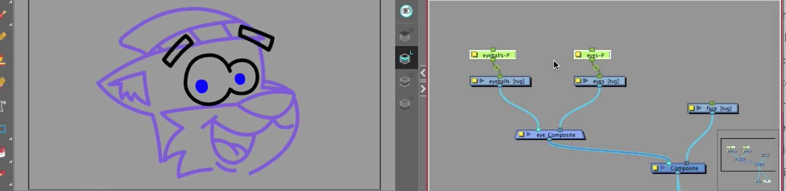
- Select the Peg Node connected to the Eyeballs Layer Node. Using the Translate tool position the pivot to the middle point (X and Y axis) of the eyeball art. It is best to move the pivot, not the arrows.
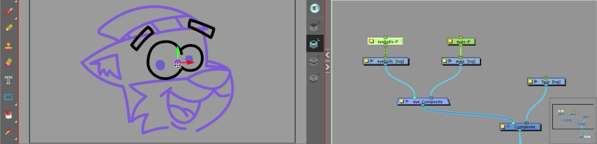
- Select the Peg Node connected to the Eyes Layer Node. Using the Translate tool position the pivot to the between the two eyes, but this time at the base of the eyes, near the top of the nose.
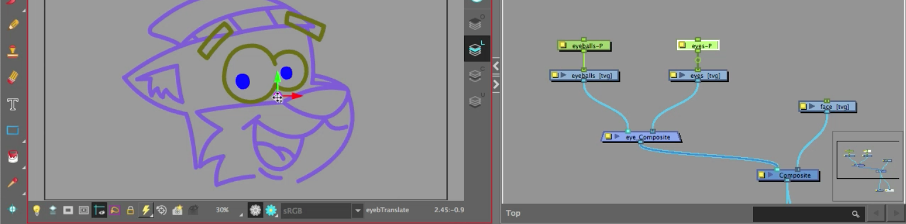
- Go to the eyes layer, select the Paint tool.
- You will be using the Art layers to design CNotes' eyes.
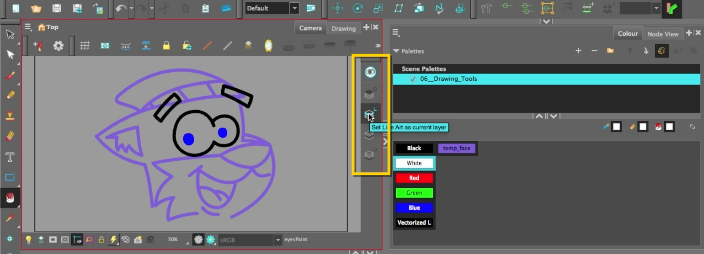
- On frame 1 and fill the white part of the eyes with the Paint tool on the Line Art layer.
- Using the Select tool, select the white of the eyes and cut.
- Go to the Colour art Layer and paste.
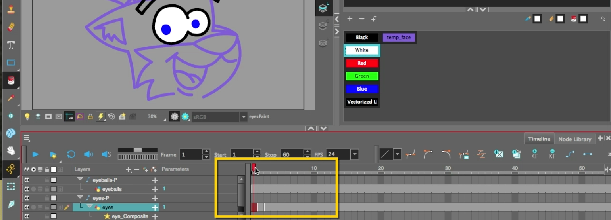
- On frame 2 and fill the white part of the half-closed eyes with the Paint tool on the Line Art layer.
- Using the Select tool, select the white of the eyes and edit/cut.
- Go to the Colour art Layer and paste.
- Repeat for frame 2.
- Switch from Camera View to Drawing View to view what art is on the Line Art and what art is on the Colour Art.
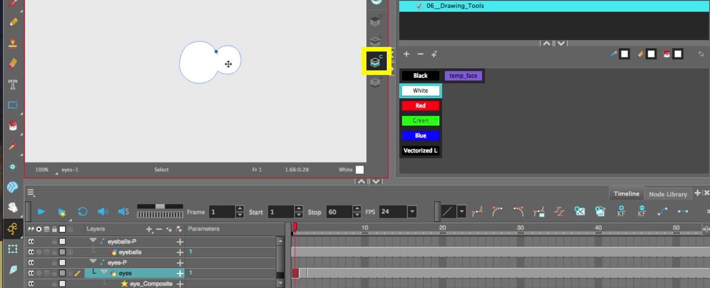
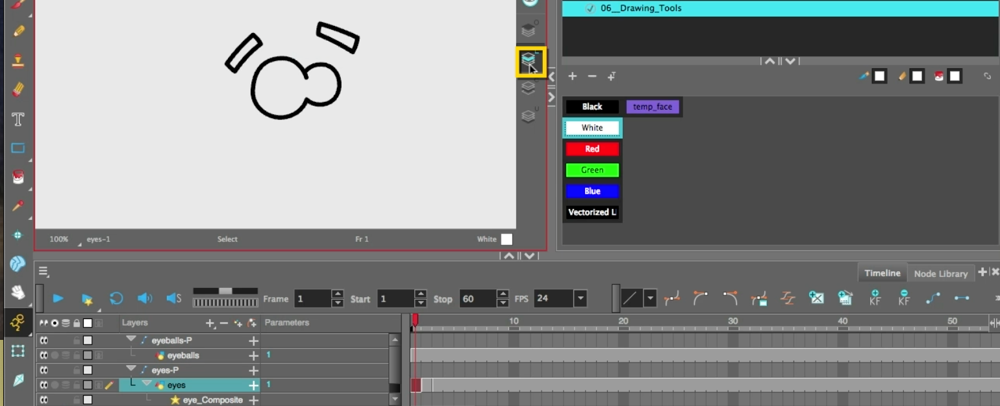
- Switch back to Camera View.
- Go to the Node Library and search for the Colour Art Node.
- Drag and drop the Colour Art Node (Isolate Category) into the Node View.
- Hold the Option key and drag the Colour Art node in between the eyes layer node and the eyes Composite. It should snap into the Waypoint. This will hide the Line Art on this Layer Node. Remember that Colour is spelt with a "u."
- Select the eyes layer and select the Transform tool.
- Position the eyes to the right side of the eyeballs, slightly overlapping the eyeballs.
- Drag a new Waypoint from the Colour Art Node into the Matte port of the eyeballs layer node.
- The eyes will be contained inside the white area of the eyeballs.
- Go to Node Library and find the Line Art node.
- Drag the Line Art Node into the Node View. Connect a Waypoint from the eyes Layer Node to the Line Art node.
- Position the Line Art node between the Colour Art node and eyeballs layer node. Attach a waypoint from the Line Art node to the eyeballs Composite node. Notice the overlap. To fix this so that the Line Art waypoint is on the far left of the Eyeball composite node.
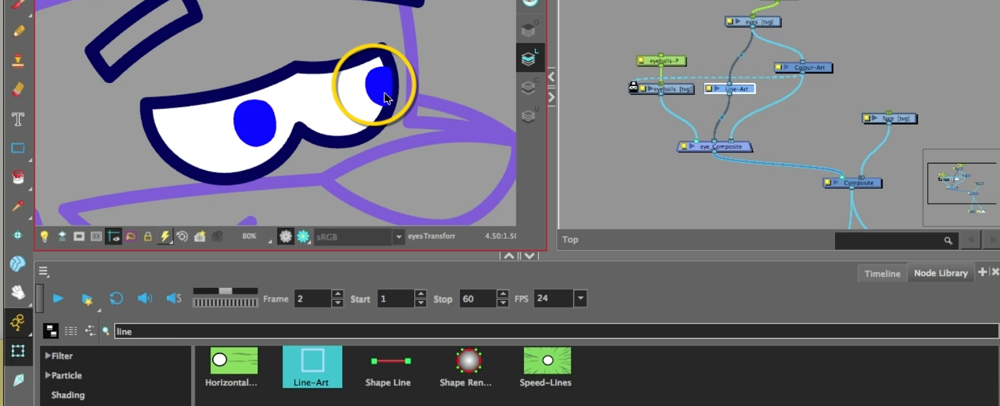
Part 2- Animating the eyeballs:
- Select and organize your nodes so all but the face node is off to the left side of the Node View.
- Click the menu option near the House icon, select Insert/Backdrop. This will organize your Node view. You can move the backdrop around with all the nodes embedded inside it.
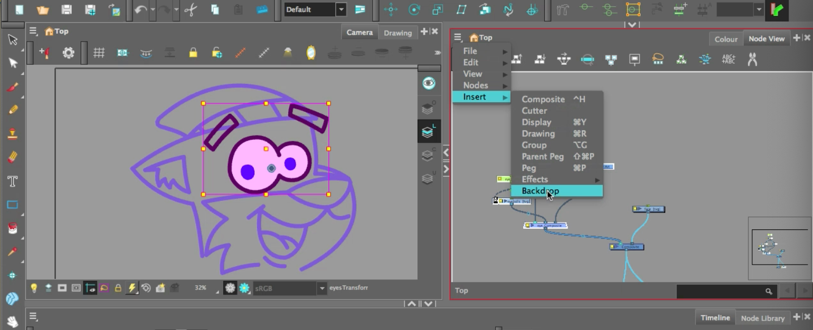
- Go to the Timeline.
- Add Keyframes on the eyeball layer to move CNotes' eyes.
- Change the drawing substitution at least 3 times on the eyeball layer (not shown in video).
- Add a Colour Card.
- You will need to export your animation as a movie file as CNote_Dynamic_Eyes.
- Submit CNote_Dynamic_Eyes.